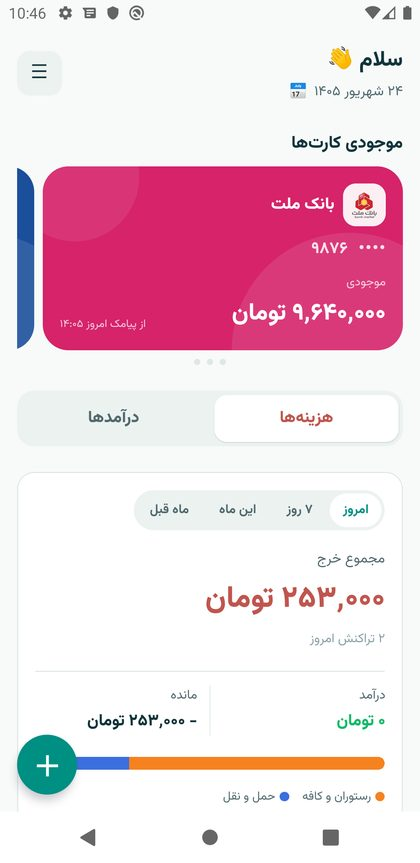
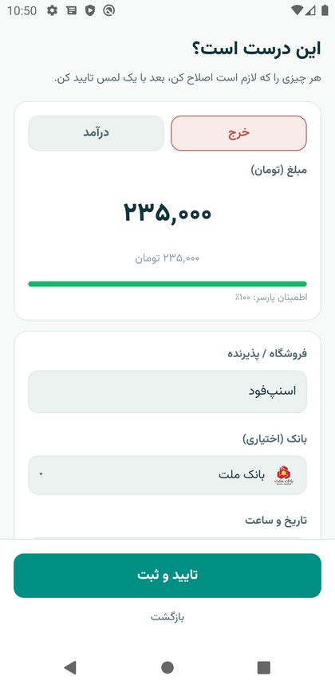
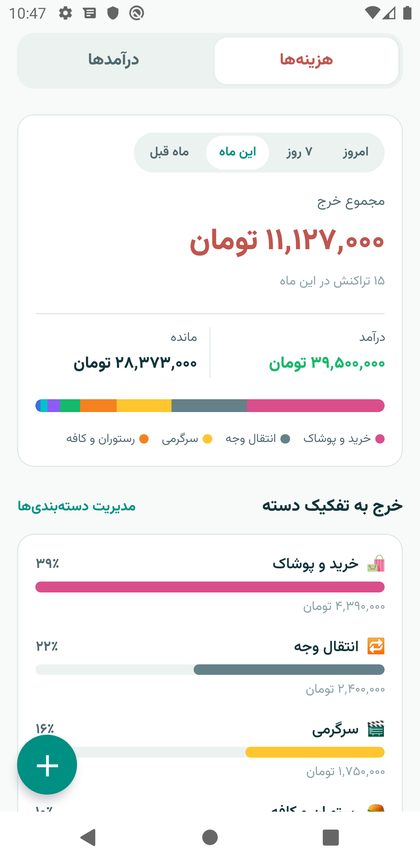
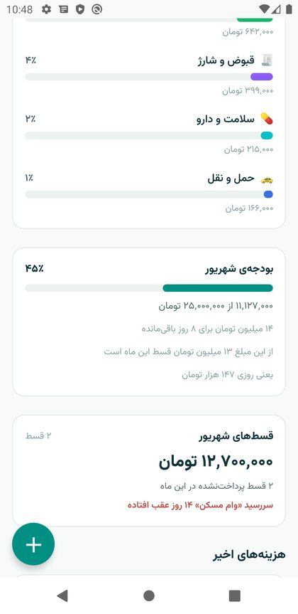
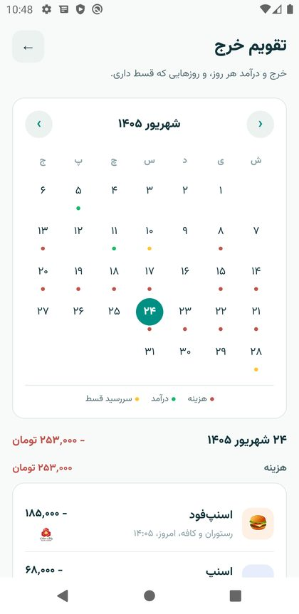
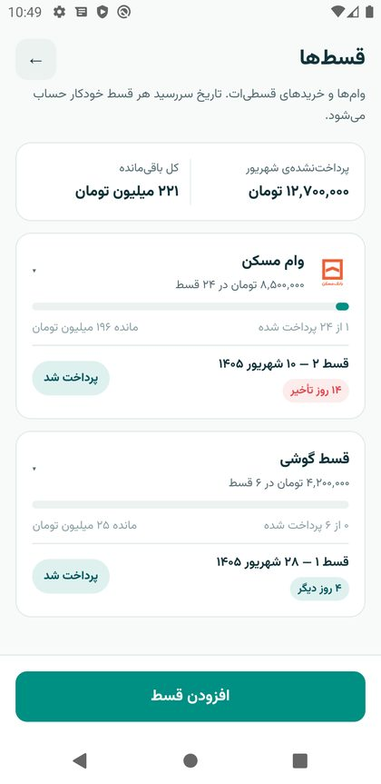
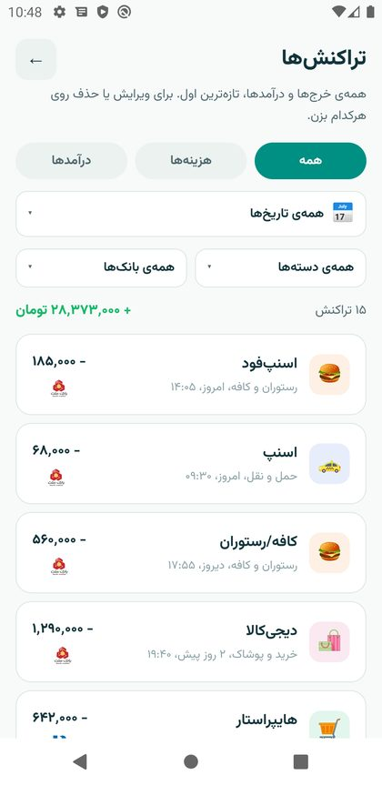

مبلغ، فروشگاه، تاریخ و بانک از همان پیامک درمیآید و فقط یک «تایید» از تو میخواهد. هیچ سروری در کار نیست: اپ حتی مجوز اینترنت هم ندارد.
رایگان · بدون حساب کاربری · اندروید ۵ به بالا

این همان کدی است که داخل اپ کار میکند — نه یک نمایش ساختگی. یک پیامک بانکی واقعی را بچسبان و ببین پولبین چه میفهمد.
🔒 همهی این پردازش در مرورگر خودت انجام میشود. متن پیامک به هیچ سروری فرستاده نمیشود — این سایت اصلاً سروری برای فرستادن ندارد.
هر چیزی که یک دفترچهی خرج باید داشته باشد، بدون اینکه چیزی بنویسی.
هر پیامک تراکنش که میرسد خوانده میشود و فقط برای یک تایید خبرت میکند. بدون این مجوز هم میتوانی پیامک را «همرسانی» کنی.
از همان پیامک، ماندهی هر کارت به شکل کارت بانکی روی داشبورد مینشیند.
ماندهی هر پیامک با پیامک قبلی سنجیده میشود. کارمزد، برداشت اینترنتبانک یا قسط خودکارِ بیپیامک پیدا میشود.
وقتی از کارتی به کارت دیگرت پول میریزی، جفتش پیدا میشود و «خرج ماه» الکی بزرگ نمیشود.
سقف ماه را بگذار؛ میگوید روزی چقدر مانده و با این روند آخر ماه کجا میرسی.
تاریخ اولین سررسید را بده؛ بقیهی سررسیدها خودشان حساب میشوند و در تقویم مینشینند.
تصویرها از نسخهی واقعی گرفته شدهاند، با دادهی نمونه.






پیامک بانکی ماندهی حساب، شمارهی کارت و عادت خرجت را با خودش دارد. سادهترین راهِ محافظت
از این داده این است که اصلاً جایی نرود. پولبین حساب کاربری نمیخواهد، سرور ندارد و در
مانیفست اندرویدش مجوز INTERNET هم نیست — یعنی حتی اگر بخواهد هم نمیتواند
چیزی بفرستد، و این را هر کسی میتواند بررسی کند.
پشتیبانگیری هم دست خودت است: فایل JSON یا اکسل میگیری و هر جا خواستی نگه میداری.